산업안전기사 (2007-03-04 기출문제)
1과목: 안전관리론
1. 그림은 산업안전표시의 기본 모형을 나타낸 것이다. 어느 표지에 사용하는 것인가? (단, L은 안전ㆍ보건표지를 인식할 수 있거나 인식하여야 할 안전거리를 말한다)
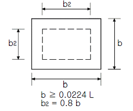
- 지시
- 금지
- 경고
- 안내
(정답률: 60%)

2. 산업안전보건법규에서 정하는 자체검사 대상 기계ㆍ기구에 대하여 자체검사를 실시한 때에 기록ㆍ보존하여야 할 사항이 아닌 것은?(관련 규정 개정으로 제외된 문제입니다. 기존 정답은 2번입니다. 여기서는 2번을 누르면 정답 처리 됩니다.)
- 검사항목
- 검사기준
- 검사자의 성명
- 검사결과
(정답률: 76%)
3. 다음 중 착오 요인과 관계가 먼 것은?
- 동기부여의 부족
- 정보 부족
- 정서적 불안정
- 자기합리화
(정답률: 51%)
4. 학생이 자기 학습속도에 따른 학습이 허용되어 있는 상태에서 학습자가 프로그램 자료를 가지고 단독으로 학습하도록 하는 교육방법은?
- 토의법
- 모의법
- 실연법
- 프로그램 학습법
(정답률: 88%)
5. 연평균 근로자 1000명인 사업장에서 연간 3건의 재해가 발생하였다. 사망 1명, 50일 요양 1명, 30일 요양 2명이 발생했을 경우에 강도율은 얼마인가?(단, 연근로시간은 2500시간으로 한다)
- 2.04
- 3.04
- 4.04
- 5.04
(정답률: 48%)
6. 다음 중 자체검사 대상 기계ㆍ기구의 검사주기가 바르게 짝지어진 것은?(관련 규정 개정으로 제외된 문제입니다. 기존 정답은 3번입니다. 여기서는 3번을 누르면 정답 처리 됩니다. 자세한 내용은 해설을 참고하세요.)
- 승강기 : 6개월마다 1회 이상
- 아세틸렌용접장치 : 6개월마다 1회 이상
- 보일러 및 압력용기 : 6개월마다 1회 이상
- 화학설비 및 그 부속설비 : 1년에 1회 이상
(정답률: 73%)
7. 다음 중 불안전한 행동에 해당되지 않는 것은?
- 안전장치를 해지한다.
- 작업장소의 공간이 부족하다.
- 보호구를 착용하지 않고 작업한다.
- 적재ㆍ청소 등 정리정돈을 하지 않는다.
(정답률: 72%)
8. 하인리히의 사고방지 기본원리 5단계 중 시정 방법의 선정 단계에 있어서 필요한 조치가 아닌 것은?
- 기술교육 및 훈련의 개선
- 안전행정의 개선
- 안전점검 및 사고조사
- 인사조정 및 감독체제의 강화
(정답률: 39%)
9. 플리커검사(flicker test)란 무엇을 측정하는 검사인가?
- 혈중 알콜농도를 측정하는 검사이다.
- 체내 산소량을 측정하는 검사이다.
- 작업강도를 측정하는 검사이다
- 피로의 정도를 측정하는 검사이다
(정답률: 79%)
10. 국제노동기구(ILO)의 산업재해 정도구분에서 부상 결과 근로자가 신체장해등급 제12급 판정을 받았다고 하면 이는 어느 정도의 부상을 의미하는가?
- 영구 일부 노동불능
- 영구 전노동불능
- 일시 일부 노동불능
- 일시 전노동불능
(정답률: 52%)
11. 다음 중 사업내 안전보건교육의 대상자에 대한 설명으로 틀린 것은?
- 신규 채용자 중 계절 작업자는 교육 대상에서 제외 한다.
- 작업내용 변경자는 필히 교육 대상이 된다.
- 신규 채용자 중 감시작업자는 교육 대상이다
- 위험작업 종사자는 교육대상이다.
(정답률: 80%)
12. 부주의의 발생원인이 소질적 조건일 때 그 대책으로 알맞은 것은?
- 카운슬링
- 교육 및 훈련
- 작업순서 정비
- 적성에 따른 배치
(정답률: 59%)
13. A 사업장의 2006년 도수율이 10 이라 할 때 연천인율은 얼마인가?
- 2.4
- 5
- 12
- 24
(정답률: 60%)
14. 하인리히의 재해 손실비용 산정에 있어서 1:4의 비율은 각각 무엇을 의미하는가?
- 치료비와 보상비의 비율
- 직접손실비와 간접손실비의 비율
- 보험지급비와 비보험손실비의 비율
- 급료와 손해보상의 비율
(정답률: 75%)
15. 다음 중 전단기의 자체검사 내용이 아닌 것은?(관련 규정 개정으로 제외된 문제입니다. 기존 정답은 4번입니다. 여기서는 4번을 누르면 정답 처리 됩니다. 자세한 내용은 해설을 참고하세요.)
- 슬라이드 기능의 이상유무
- 클러치 및 브레이크의 이상유무
- 배선, 개폐기 및 제어장치의 이상유무
- 리밋스위치ㆍ릴레이 그 밖의 전자부품의 이상유무
(정답률: 71%)
16. 안전교육방법 중 인간의 5관을 활용하는 방법에서 그 효과치가 가장 낮은 것은?
- 시각
- 청각
- 촉각
- 미각
(정답률: 80%)
17. 다음 중 재해예방의 4원칙에 대한 설명으로 잘못된 것은?
- 사고의 발생과 그 원인과의 관계는 필연적이다.
- 손실과 사고와의 관계는 필연적이다.
- 재해를 예방하기 위한 대책은 반드시 존재한다.
- 모든 인재는 예방이 가능하다
(정답률: 55%)
18. 산업안전보건법규에서 정하고 있는 안전ㆍ보건 교육내용 중 신규채용 및 작업내용 변경시의 교육에 해당되지 않는 것은?
- 정리정돈 및 청소에 관한 사항
- 기계・기구의 위험성과 작업의 순서 및 동선에 관한 사항
- 작업안전지도요령에 관한 사항
- 물질안전보건자료에 관한 사항
(정답률: 56%)
19. 보호구검정규정에서 정하는 전면형 방진마스크의 항목 별 성능기준에서 유효시야는 몇 % 이상이어야 하는가?
- 60
- 65
- 70
- 75
(정답률: 53%)
20. 레윈(Lewin)은 인간의 행동 특성을 "B = ( PㆍE )"로 표현하였다. 변수 "E"가 의미하는 것으로 옳은 것은?
- 연령
- 성격
- 작업환경
- 지능
(정답률: 85%)
2과목: 인간공학 및 시스템안전공학
21. 다음의 직ㆍ병렬 시스템에 있어서의 장치의 신뢰도는? (단, 각 구성요소의 신뢰도는 R이다)
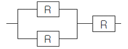
- R3
- R2 +R-1
- 2R2-R3
- R2 (1-R)
(정답률: 56%)
22. FTA 도표에서 사용하는 논리기호 중 다른 부분에 관한 이행 또는 연결을 나타내는 기호로 사용하는 것은?
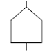
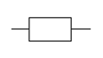
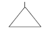
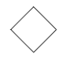
(정답률: 31%)
23. 다음 중 시스템안전관리의 내용에 해당되지 않는 것은?
- 시스템 안전 프로그램의 해석과 검토 및 평가
- 안전활동의 계획 및 조직과 관리
- 시스템안전에 필요한 사항의 동일성에 대한 식별동정
- 다른 시스템 프로그램 영역의 배제
(정답률: 68%)
24. 은폐(MASKING)효과를 잘못 설명한 것은?
- 음의 한 성분이 다른 성분에 대한 귀의 감수성을 감소시키는 상황을 말한다.
- 사무실의 자판 소리 때문에 말소리가 묻히는 경우에 해당된다.
- 여러 음압 수준을 갖는 순음들과 확대역 소음에 대한 변화 감지역을 나타낸 것이다.
- 피은폐된 한 음의 가청역치가 다른 은폐된 음 때문에 높아지는 현상을 말한다.
(정답률: 31%)
25. 리스크 관리에서 리스크를 통제하는 4가지 방법에 해당 하지 않는 것은?
- 회피(avoidance)
- 감축(reduction)
- 보류(retention)
- 분배(distribution)
(정답률: 39%)
26. 평균고장 시간이 4×108 시간인 요소 4개가 직렬체계를 이루었을 때 이 체계의 수명은 몇 시간인가?
- 1×108
- 4×108
- 8×108
- 16×108
(정답률: 33%)
27. 실내 전체를 일률적으로 밝히는 조명방법으로 실내전체가 밝아지므로 기분이 명랑해지고 눈의 피로가 적어져서 사고나 재해가 적어지는 조명 방식은?
- 직접조명
- 간접조명
- 국부조명
- 전반조명
(정답률: 54%)
28. 설비를 수리하면서 사용하는 체계에서 고장과 고장사이 시간의 평균치를 무엇이라 하는가?
- MTBF
- MTLFF
- MTTF
- MTBHE
(정답률: 52%)
29. 다음의 FT도에서 각 요소의 발생확률이 요소 ①은 0.15, 요소 ②는 0.2, 요소 ③은 0.25, 요소 ④는 0.3일 때 A 사상의 발생확률은 얼마인가? (단, 소숫점 셋째 자리까지 구하시오)
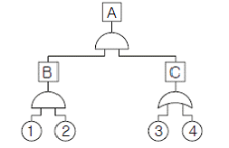
- 0.007
- 0.014
- 0.071
- 0.143
(정답률: 45%)
30. 다음 중 초기고장과 마모고장의 고장형태와 그 예방 대책에 관한 연결이 잘못된 것은?
- 초기고장 - 감소형 - 번인(Burn in)
- 초기고장 - 감소형 - 디버깅(debugging)
- 마모고장 - 증가형 - 예방보전(PM)
- 마모고장 - 증가형 - 스크리닝(screening)
(정답률: 47%)
31. 주어진 자극에 대해 인간이 갖는 변화감지역을 표현하는 데에는 웨버(Weber)의 법칙을 이용한다. 이때 웨버(Weber) 비의 관계식으로 옳은 것은? (단, 변화감지역을 표준자극을 I라 한다.)
- 웨버(Weber) 비 =
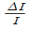
- 웨버(Weber)비 =
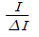
- 웨버(Weber)비 =
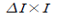
- 웨버(Weber)비 =
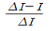
(정답률: 61%)
32. 단순반복 작업으로 인하여 발생되는 건강장애 즉, CTDS 의 발생요인이 아닌 것은?
- 과도한 힘의 요구
- 부적합한 작업자세
- 긴 작업주기
- 장시간의 진동
(정답률: 43%)
33. 인간과 기계(환경) 계면에서의 인간과 기계와의 조화성은 3가지 차원에서 고려되는데 이에 해당하지 않는 것은?
- 신체적 조화성
- 지적 조화성
- 감성적 조화성
- 감각적 조화성
(정답률: 35%)
34. 소음 노출로 인한 청력손실에 관한 내용 중 관계가 먼 것은?
- 초기의 청력손실은 1000Hz에서 크게 나타난다.
- 청력손실의 정도와 노출된 소음수준은 비례관계가 있다.
- 약한 소음에 대해서는 노출기간과 청력손실 간에 관계가 없다
- 강한 소음에 대해서는 노출기간에 따라 청력 손실도 증가한다.
(정답률: 45%)
35. 다음 중 시스템의 병렬계에 대한 특성이 아닌 것은?
- 요소(要素)의 중복도가 늘수록 계(系)의 수명은 길어진다
- 요소(要素)의 수가 많을수록 고장의 기회는 줄어든다.
- 요소(要素)의 어느 하나라도 정상이면 계(系)는 정상이다
- 계(系)의 수명은 요소(要素) 중에서 수명이 가장 짧은 것으로 정해진다.
(정답률: 64%)
36. 사고원인 가운데 인간의 과오에 기인된 원인분석, 확률을 계산함으로서 제품의 결함을 감소시키고, 인간공학적 대책을 수립하는데 사용되는 분석기법은?
- CA
- FMEA
- THERP
- MORT
(정답률: 62%)
37. 다음은 화학설비의 안전성 평가단계이다. 순서를 바르게 나타낸 것은?
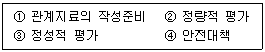
- ①-②-③-④
- ①-③-④-②
- ①-②-④-③
- ①-③-②-④
(정답률: 63%)
38. 다음 중 시스템안전위험분석(SSHA)을 수행하기 위한 최초의 작업으로서 구상단계나 설계 및 발주의 극히 초기에 실시되는 것은?
- 예비위험분석(PHA)
- 결함위험분석(FHA)
- 디시젼트리(DT)
- 결함수분석(FTA)
(정답률: 72%)
39. 인간의 생리적 부담 척도 중 국소적 근육활동의 척도로 이용되는 것은?
- 혈압
- 맥박수
- 근전도
- 점멸융합 주파수
(정답률: 70%)
40. 다음 중 양립성(compatibility)의 종류가 아닌 것은?
- 개념
- 공간
- 운동
- 인지
(정답률: 60%)
3과목: 기계위험방지기술
41. 보일러의 방호장치에 속하지 않는 것은?
- 압력방출장치
- 비상정지창치
- 압력제한 스위치
- 고ㆍ저 수위 조절장치
(정답률: 57%)
42. 선반의 바이트에 설치되는 안전장치는?
- 칩브레이커
- 커버
- 심압대
- 보안경
(정답률: 64%)
43. 드릴의 작업안전수칙에 해당하는 것은?
- 정확한 작업을 위하여 구멍에 손을 넣어 확인한다.
- 작은 일감은 양손으로 견고히 잡고 작업한다.
- 손을 보호하기 위하여 장갑을 착용한다.
- 척 렌치(chuck wrench)를 척에서 반드시 뺀다.
(정답률: 67%)
44. 산소-아세틸렌 용접 중 고무호스에 역화 현상이 발생한다면 가장 먼저 취해야 할 조치사항은?
- 아세틸렌 밸브를 잠근다.
- 토치를 물에 넣는다.
- 산소밸브를 즉시 잠근다.
- 정상적으로 될 때까지 기다린다.
(정답률: 58%)
45. 산업용 로봇의 가동영역내에서 교시작업을 행할 때 취해야 할 조치사항이 아닌 것은?
- 작업중의 매니퓰레이터 속도를 정한다.
- 작업자가 이상을 발견할 시는 관리감독자가 올 때까지만 로봇운전을 계속한다.
- 작업을 하는 동안 기동스위치에 타작업자가 작동시킬수 없도록 작업중 표시를 한다.
- 2인 이상의 근로자에게 작업을 시킬 때의 신호방법을 정한다.
(정답률: 73%)
46. 일반적으로 보일러에 주로 사용되는 안전밸브 형식으로 가장 적당한 것은?
- 중추식
- 스프링식
- 지렛대식
- 벨트식
(정답률: 53%)
47. 프레스 작업에서 제품을 꺼낼 경우 파쇠철을 제거하기 위하여 사용하는데 가장 알맞은 것은?
- 걸레
- 브러시
- 압축공기
- 칩 브레이커
(정답률: 51%)
48. 컨베이어의 종류가 아닌 것은?
- 체인 컨베이어
- 롤러 컨베이어
- 스크류 컨베이어
- 그리드 컨베이어
(정답률: 53%)
49. 프레스 작업시작 전 점검 사항은?
- 제어장치의 이상 유무
- 리미트스위치, 릴레이 기타 전자 부품의 이상유무
- 1행정 1정지기구ㆍ급정지장치 및 비상정지장치의 기능
- 전자밸브, 압력조정밸브 기타 공압제품의 이상유무
(정답률: 58%)
50. 크레인의 방호장치에 해당 되지 않는 것은?
- 권과방지장치
- 과부하방지장치
- 자동보수장치
- 비상정지장치
(정답률: 66%)
51. 슬라이드가 내려옴에 따라 손을 쳐내는 막대가 좌우 또는 앞뒤로 왕복하면서 위험점으로부터 손을 보호하여 주는 프레스의 안전장치는?
- 스위프 가드
- 풀아웃
- 게이트 가드
- 양손조작장치
(정답률: 41%)
52. 진동의 단위는 다음 중 어느 것인가?
- dB
- rpm
- NRN
- SPL
(정답률: 38%)
53. 보일러 발생증기의 이상현상이 아닌 것은?
- 역화현상
- 프라이밍현상
- 포밍현상
- 캐리오버현상
(정답률: 60%)
54. 연삭숫돌에 결합도가 높아 무디어진 입자가 탈락하지 않으므로 숫돌표면이 매끈해져서 연삭 성능이 떨어지며 절삭이 어렵게 되는 현상을 무엇이라 하는가?
- 자생 현상
- 부식 현상
- 글레이징 현상
- 드레싱 현상
(정답률: 52%)
55. 아세틸렌 용기의 사용시 주의사항에 관한 설명 중 틀린 것은?
- 충격을 가하지 않는다.
- 화기나 열기를 멀리한다.
- 사용 후 약간의 잔압을 남겨둔다
- 아세틸렌 용기를 뉘어놓고 사용한다.
(정답률: 65%)
56. 원통의 내면을 선반으로 절삭시 안전상 주의할 점으로 옳은 것은?
- 공작물이 회전 중에 치수를 측정한다.
- 절삭유가 튀므로 면장갑을 착용한다.
- 절삭바이트는 공구대에서 길게 나오도록 설치한다.
- 보안경을 착용하고 작업한다.
(정답률: 68%)
57. 양도ㆍ대여ㆍ설치가 제한되는 위험기계ㆍ기구에 해당되지 않는 것은?
- 보일러
- 프레스
- 선반
- 연삭기
(정답률: 26%)
58. 산소-아세틸렌 가스용접에 의해 발생되는 재해와 거리가 가장 먼 것은?
- 화재
- 폭발
- 가스중독
- 안염
(정답률: 58%)
59. 밀링작업에서 주의해야 할 사항으로 옳지 않은 것은?
- 보안경을 쓴다.
- 일감 절삭 중 치수를 측정한다.
- 커터에 옷이 감기지 않게 한다.
- 정지한 상태에서 일감을 고정한다.
(정답률: 70%)
60. 셰이퍼 작업시 안전사항으로 틀린 것은?
- 보안경을 착용한다.
- 탭 조정핸들은 조절 후 제거한다.
- 재질에 따라 절삭속도를 결정한다.
- 램 행정을 공작물길이보다 20~30mm 작게 한다.
(정답률: 59%)
4과목: 전기위험방지기술
61. 3300/220V, 20kVA 인 3상 변압기에서 공급받고 있는 저압전선로의 절연부분의 전선과 대지간의 절연저항의 최소 값은 약 몇 Ω인가? (단, 변압기의 저압측의 1단자는 제2종 접지공사 시행)
- 1240
- 2794
- 4840
- 8383
(정답률: 41%)
62. 3상 3선식 전선로의 보수를 위하여 정전 작업을 할 때 취하여야 할 기본적인 조치는?
- 1선을 접지한다.
- 2선을 단락 접지한다.
- 3선을 단락 접지한다.
- 접지를 하지 않는다.
(정답률: 67%)
63. 송전계통의 절연협조에 있어 절연레벨을 가장 낮게 잡고 있는 것은?
- 피뢰기
- 변성기
- 변압기
- 리액터
(정답률: 41%)
64. 정전기 방전으로 인한 재해가 발생될 조건으로 적절하지 않는 것은?
- 방전하기에 충분한 전하가 축적되어 있을 때
- 부도체의 대전방지를 위해 접지를 한 경우
- 대전물체의 전계세기가 1[mV/m] 이상일 때
- 정전기방전 에너지가 주변 가스의 최소 착화에너지 이상일 때
(정답률: 20%)
65. 설비의 이상현상에 나타나는 아크(Arc)의 내용이 아닌 것은?
- 단락에 의한 아크
- 지락에 의한 아크
- 차단기에서의 아크
- 전선저항에 의한 아크
(정답률: 44%)
66. 전기누전으로 인한 화재조사시에 착안해야 할 입증 흔적과 관계없는 것은?
- 접지점
- 누전점
- 혼촉점
- 발화점
(정답률: 43%)
67. 폭발위험장소에서의 본질안전 방폭구조에 대한 설명으로 옳지 않은 것은?
- 본질안전 방폭구조의 기본적 개념은 점화능력의 본질적 억제이다.
- 본질안전 방폭구조의 Exib는 fault에 대한 2중 안전 보장으로 0종~2종 장소에 사용할 수 있다.
- 본질안전 방폭구조의 적용은 에너지가 1.3W, 30V 및 250mA 이하인 개소에 가능하다.
- 온도, 압력, 액면유량등의 검출용 측정기는 대표적인 본질안전 방폭구조의 예이다.
(정답률: 48%)
68. 정전기 발생현상의 분류에 해당되지 않는 것은?
- 마찰대전
- 박리대전
- 유동대전
- 유체대전
(정답률: 60%)
69. 다음 중 심실세동을 일으키는 위험 한계 에너지로 알맞은 것은 약 몇 J인가?(단 심실세동전류는
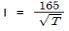
[mA], 통전시간 T = 1[s],인체의 전기저항 R = 800Ω 이라 한다.)- 12
- 22
- 32
- 42
(정답률: 56%)
70. 전동기를 운전하고자 할 때 개폐기의 조작순서가 맞는 것은?
- 메인 스위치 → 분전반 스위치 → 전동기용 개폐기
- 분전반 스위치 → 메인 스위치 → 전동기용 개폐기
- 전동기용 개폐기 → 분전반 스위치 → 메인 스위치
- 분전반 스위치 → 전동기용 스위치 → 메인 스위치
(정답률: 54%)
71. 3상 전동기의 부하에 흐르는 각 선전류를 각각 i1, i2, i3라 할 때 영상변류기의 2차측에 전압이 유도되는 경우는?
- i1 + i2 + i3 = 0
- i1+ i2
- i1 + i2 + i3 = lg
- i2 + i3
(정답률: 53%)
72. 피뢰침의 설명 중 가장 적합한 것은?
- 피뢰침의 선단은 세 갈래로 하고 금도금하여야 뇌격의 흡입능력에 효과가 있다.
- 위험물 저장소인 경우와 일반물 저장소의 경우 보호각도가 다르므로 돌침을 건물위에 높게 설치하면 100% 보호할 수 있다.
- 건물위에 낮은 돌침을 여러개 설치하는 것이 효과가 있다
- 뇌격전류는 저항이 낮은 부분으로 흐르기 쉬우므로 금도금한 도체나 순은으로 크게 하여 한곳에 놓아두면 뇌격흡입능력에 효과가 크다
(정답률: 33%)
73. 절연 재료의 종류와 최고 사용온도를 잘못 표현한 것은?
- C 종: 180℃ 이상
- B종: 130℃ 이내
- A 종: 90℃ 이내
- F종: 155℃ 이내
(정답률: 37%)
74. 다음 중 두 물체의 마찰로 3000V 의 마찰전압이 생겼다. 폭발성 위험의 장소에서 두 물체의 정전 용량은 약 몇 ㎊ 이면 폭발로 이어지겠는가? (단, 착화에너지는 0.25mJ 이다.)
- 13.75
- 27.5
- 45
- 56
(정답률: 27%)
75. 전격의 위험도에 대한 설명 중 옳지 않은 것은?
- 인체의 통전경로에 따라 위험도가 달라진다.
- 몸이 땀에 젖어 있으면 더 위험하다.
- 전격시간이 길수록 더 위험하다.
- 전압은 전격위험을 결정하는 1차적 요인이다.
(정답률: 64%)
76. 작업장내에서 불의의 감전사고가 발생 하였을 경우 우선 적으로 응급조치 해야할 사항으로 가장 적절하지 않은 것은?
- 전격을 받아 실신하였을 때는 즉시 재해자를 병원에 구급조치 하여야 한다.
- 우선적으로 재해자를 접촉되어 있는 충전부로부터 분리시킨다.
- 제3자는 즉시 가까운 스위치를 개방하여 전류의 흐름을 중단시킨다.
- 전격에 의해 실신했을 때 그곳에서 즉시 인공호흡을 행하는 것이 급선무이다.
(정답률: 48%)
77. 용량 500W의 전열기로 2L의 물을 20℃에서 100℃ 까지 온도를 높이는데 약 몇 분이 걸리겠는가? (단, 전열기 발생 열량의 80%만이 유효하게 이용한다.)
- 18
- 22
- 28
- 33
(정답률: 27%)
78. 전선로를 개로한 후에도 잔류 전하에 의한 감전재해를 방지하기 위하여 방전을 요하는 것은?
- 나선의 가공 송배선 선로
- 전열회로
- 전동기에 연결된 전선로
- 개로한 전선로가 전력케이블로 된 것
(정답률: 45%)
79. 다음 중 계통접지를 바르게 설명한 것은?
- 누전되고 있는 기기에 접촉되었을 때의 감전방지
- 고압전로와 저압전로가 혼촉되었을 때의 감전이나 화재방지
- 누전차단기의 동작을 확실하게 하며, 고주파에 의한 계통의 잡음 및 오동작 방지
- 낙뇌로부터 전기기기의 손상을 방지
(정답률: 50%)
80. 절연열화가 진행되어 누설전류가 증가하면서 발생되는 결과와 거리가 먼 것은?
- 감전사고
- 누전화재
- 정전기증가
- 아크 지락에 의한 기기의 손상
(정답률: 62%)
5과목: 화학설비위험방지기술
81. 다음 표의 가스들은 위험도가 높은 가스들이다. 위험도가 큰 것부터 작은 순으로 나열한 것은?
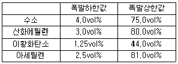
- 아세틸렌 - 산화에틸렌 - 이황화탄소 - 수소
- 아세틸렌 - 산화에틸렌 - 수소 - 이황화탄소
- 이황화탄소 - 아세틸렌 - 수소 - 산화에틸렌
- 이황화탄소 - 아세틸렌 - 산화에틸렌 - 수소
(정답률: 57%)
82. 고압가스장치에서 중 안전밸브의 설치위치가 아닌 것은?
- 압축기 각 단의 토출측
- 저장탱크 상부
- 펌프의 흡입측
- 감압밸브 뒤 배관
(정답률: 38%)
83. 유해물 중독에 대한 응급처치 방법으로 잘못된 것은?
- 신체를 따뜻하게 하고 신선한 공기를 확보한다.
- 알코올이나 필요한 약품을 투여한다.
- 환자를 안정시키고, 침대에 옆으로 누인다.
- 호흡 정지시 인공호흡을 실시한다.
(정답률: 68%)
84. 불활성화(퍼지)에 대한 설명으로 틀린 것은?
- 압력퍼지가 진공퍼지에 비해 퍼지시간이 길다
- 진공퍼지는 압력퍼지보다 인너트 가스 소모가 적다
- 사이폰 퍼지가스의 부피는 용기의 부피와 같다
- 스위프 퍼지는 용기나 장치에 압력을 가하거나 진공으로 할 수 없을 때 사용된다.
(정답률: 48%)
85. 반응기를 조작방식에 따라 분류할 때 해당되지 않는 것은?
- 회분식 반응기
- 반회분식 반응기
- 연속식 반응기
- 관형식 반응기
(정답률: 59%)
86. 인화성 물질의 증기, 인화성 가스 또는 인화성 분진에 의한 화재 및 폭발의 예방조치와 관계가 먼 것은?
- 통풍
- 세척
- 환기
- 제진
(정답률: 57%)
87. 다음 연소한계에 대한 설명으로 옳은 것은?
- 연소하한값은 온도의 증가와 함께 증가한다.
- 연소상한값은 온도의 증가와 함께 증가한다.
- 연소하한값은 저온에서는 약간 증가하나 고온에서는 일정하다.
- 연소한계는 온도에 관계없이 일정하다.
(정답률: 48%)
88. 왕복식 압축기의 운전 중 실린더 주변에 이상음이 발생한 경우의 그 원인으로 볼 수 없는 것은?
- 크로스 헤드의 마모와 느슨함
- 피스톤링의 마모 파손
- 흡입ㆍ배기밸브의 불량
- 실린더내의 물 그 밖에 이물질 혼입
(정답률: 26%)
89. 다음 중 액체가 분산되어 미립자 형태로 공기 중에 존재 하는 것은?
- Mist
- Fume
- Dust
- Soot
(정답률: 51%)
90. 산업안전보건법규에서 정하는 화학설비 및 그 부속설비의 자체검사 내용이 아닌 것은?
- 내면 및 외면의 현저한 손상, 변형 및 부식의 유무
- 안전밸브, 긴급차단장치 기타 방호장치 기능의 이상유무
- 밸브, 콕, 스위치 등의 개폐방향에 대한 색채 표시 유무
- 그 설비 내부에 폭발 또는 화재의 우려가 있는 물질이 있는지 여부
(정답률: 44%)
91. 다음 표와 같은 조성의 혼합물이 있다. 이 혼합가스의 연소하한값은?
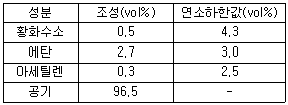
- 3.07 vol%
- 8.1 vol%
- 11.82 vol%
- 15.27vol%
(정답률: 49%)
92. 자동제어의 종류를 제어동작에 따른 분류에서 연속제어 동작에 해당되지 않는 것은?
- 다위치동작
- 비례동작
- 적분동작
- 미분동작
(정답률: 44%)
93. 파열판과 스프링식 안전밸브를 직렬로 설치해야 할 경우가 아닌 것은?
- 부식물질로부터 스프링식 안전밸브를 보호할 때
- 독성이 매우 강한 물질을 취급시 완벽하게 격리를 할 때
- 스프링식 안전밸브에 막힘을 유발시킬 수 있는 슬러지를 방출시킬 때
- 릴리프 장치가 작동 후 방출라인이 개방되어야 할 때
(정답률: 42%)
94. 다음 중 화재시 주수에 의해 오히려 위험이 증대되는 물질은?
- 황
- 니트로셀룰로오스
- 적린
- 금속나트륨
(정답률: 54%)
95. 반응폭발에 영향을 미치는 요인 중 영향이 적은 것은?
- 반응생성물의 조성
- 냉각시스템
- 반응온도
- 교반상태
(정답률: 33%)
96. 비점이나 인화점이 낮은 액체가 들어 있는 용기 주위에 화재 등으로 인하여 가열되면, 내부의 비등현상으로 인한 압력 상승으로 용기의 벽면이 파열되면서 그 내용물이 폭발적으로 증발, 팽창하면서 폭발을 일으키는 현상을 무엇이라고 하는가?
- BLEVE
- UVCE
- 개방계 폭발
- 밀폐계 폭발
(정답률: 67%)
97. 다음 보기의 물질들이 가지고 있는 공통적인 특징은?
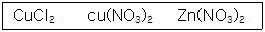
- 조해성
- 풍해성
- 발화성
- 산화성
(정답률: 44%)
98. 폭발(연소)범위가 2.2vol% ~ 9.5vol%인 프로판(C3H8)의 최소산소농도(MOC)값은 몇 vol%인가?(단, 계산은 화학양론식을 이용하여 추정한다)
- 9
- 11
- 13
- 15
(정답률: 43%)
99. 다음 중 위험물의 기준에 대한 설명으로 틀린 것은?
- 급성독성물질로 LD50(경구투입, 쥐)이 kg당 300mg(체중) 이하인 화학물질
- 1기압하에서 인화점이 60℃ 이하인 인화성 액체
- 폭발한계 농도의 하한이 15% 이하이거나 상하한의 차가 25% 이상인 가스
- 규정된 인화성 가스 이외에 20℃, 1기압하에서 기체상태인 인화성 가스
(정답률: 35%)
100. 가스를 화학적 특성에 따라 분류할 때 독성가스가 아닌 것은?
- 이산화탄소(CO2)
- 산화에틸렌(C2H4O)
- 황화수소(H2S)
- 시안화수소(HCN)
(정답률: 57%)
6과목: 건설안전기술
101. 강관을 사용하여 비계를 구성하는 때 준수사항을 설명한 것으로 틀린 것은?
- 비계기둥의 간격을 띠장방향에서는 1.5m~1.8m, 장선 방향에서는 1.5m 이하로 한다.
- 지상 첫 번째 띠장은 3m 이하, 기타는 2.5m 이내마다 설치한다.
- 비계기둥간의 적재하중은 400kg을 초과하지 않도록 한다.
- 비계기둥의 최고로부터 31m 되는 지점 밑부분의 비계기둥은 2개의 강관으로 묶어 세운다
(정답률: 52%)
102. 말비계를 설치하고자 할 때 작업면의 높이가 2m 이상인 경우는 작업발판의 폭을 최소 몇 cm 이상으로 하여야 하는가?
- 20cm
- 30cm
- 40cm
- 50cm
(정답률: 53%)
103. 사다리식 통로의 구조에 대한 아래의 설명 중 ( )에 알맞은 것은?
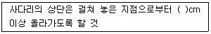
- 30
- 40
- 50
- 60
(정답률: 59%)
104. 다음의 철골구조물 중 건립중 강풍에 의한 풍압 등 외압에 대한 내력이 설계에 고려되었는지 확인하여야 할 구조물이 아닌 것은?
- 높이 10m 이상의 구조물
- 폭과 높이비가 1:4 이상인 구조물
- 이음부가 현장용접인 구조물
- 단면구조에 현저한 차이가 있는 구조물
(정답률: 43%)
1⑤. 철골 작업을 할 때 악천후시에는 작업을 중지토록 하여야한다. 다음 중 작업을 중지하여야 하는 기준으로 옳은 것은?
- 강설량이 분당 1밀리미터 이상인 경우
- 강우량이 시간당 1센티미터 이상인 경우
- 풍속이 초당 10미터 이상인 경우
- 강설량이 시간당 5밀리미터 이상인 경우
(정답률: 58%)
106. 지반굴착작업에 있어서 미리 작업장소 및 그 주변의 지반에 대하여 조사하여야 할 사항이 아닌 것은?
- 형상ㆍ지질 및 지층의 상태
- 균열ㆍ함수ㆍ용수 및 동결의 유무 또는 상태
- 지반의 지하수위 상태
- 버팀대의 긴압의 상태
(정답률: 57%)
107. 추락을 방지하기 위하여 사용하는 안전대 중 안전대에 의지하지 않아도 작업할 수 있는 발판이 확보되었을 때 사용하는 2종 안전대는?
- U자걸이 전용
- 1개걸이 전용
- 안전블록
- 추락방지대
(정답률: 29%)
108. 구조물 해체작업시 해체계획에 포함되지 않는 것은?
- 사업장 내 연락방법
- 악천후시 작업계획
- 해체방법 및 해체순서 도면
- 가설설비, 방호설비, 환기설비 등의 방법
(정답률: 38%)
109. 하역작업시 위험방지에 대한 설명으로 옳지 않는 것은?
- 부두ㆍ안벽 등에서 하역작업을 할 때 작업장 및 통로의 위험한 부분에는 안전하게 작업할 수 있도록 조명을 유지해야 한다.
- 꼬임이 끊어진 섬유로프는 화물운반용 또는 고정용으로 사용하여서는 안된다.
- 부두 또는 안벽의 선을 따라 통로를 설치할 때는 폭을 75cm 이상으로 해야 한다.
- 포대, 가마니 등의 용기로 포장된 화물이 바닥으로 부터 높이가 2m 이상 되는 경우, 인접 하적단과의 간격을 하적단 밑부분에서 10cm 이상으로 해야 한다.
(정답률: 61%)
110. 달비계(곤돌라의 달비계는 제외)의 최대적재하중을 정할 때 사용하는 안전계수의 기준으로 옳은 것은?
- 달기체인의 안전계수는 10 이상
- 달기강대와 달비계의 하부 및 상부지점의 안전계수는 목재의 경우 2.5 이상
- 달기와이어로프의 안전계수는 5 이상
- 달기강선의 안전계수는 10 이상
(정답률: 43%)
111. 차량계 하역운반기계를 사용하여 작업을 할 때 기계의 전도ㆍ전락에 의해 근로자가 위해를 입을 우려가 있을 때 사업주가 조치하여야 할 사항 중 적당하지 않은 것은?
- 근로자의 출입금지 조치
- 하역운반기계를 유도하는 자 배치
- 지반의 부동침하방지 조치
- 갓길의 붕괴를 방지하기 위한 조치
(정답률: 47%)
112. 보통흙의 건조된 지반을 흙막이지보공 없이 굴착하려 할 때 적합한 안전경사는?
- 1 : 1 ~ 1 : 1.5
- 1 : 0.5 ~ 1 : 1
- 1 : 1.5
- 1 : 1.8
(정답률: 58%)
113. 다음 중 대상액 50억원 이상의 건설업 산업안전보건관리비 계상기준에 맞지 않는 것은?
- 일반 건설공사 (갑) : 1.97%
- 일반 건설공사 (을) : 2.10%
- 중건설공사 : 2.44%
- 철도, 궤도신설공사 : 0.94%
(정답률: 39%)
114. 단면적이 153mm2인 철근을 인장시험한 결과 11.5tonf에서 파단 되었다. 이 철근의 인장강도는?
- 70kgf/mm2
- 72kgf/mm2
- 75kgf/mm2
- 78kgf/mm2
(정답률: 49%)
115. 굴착과 싣기를 동시에 할 수 있는 토공기계가 아닌 것은?
- power shovel
- tractor shovel
- back hoe
- motor grader
(정답률: 57%)
116. 추락안전방망 중 5cm 그물코로서 매듭방망일 경우 인장강도는 최소 얼마 이상이어야 하는가? (단, 신품의 경우)
- 50kgf
- 100kgf
- 110kgf
- 150kgf
(정답률: 56%)
117. 토류벽의 붕괴예방에 관한 조치 중 적절하지 않은 것은?
- 웰 포인트(well point)공법 등에 의해 수위를 저하 시킨다.
- 근입 깊이를 가급적 짧게 한다.
- 어스앵커(earth anchor)시공을 한다.
- 토류벽 인접지반에 중량물 적치를 피한다.
(정답률: 58%)
118. 수중 콘크리트 타설작업시 준수사항으로 잘못된 것은?
- 물을 정지시킨 정수 중에서 타설하는 것이 좋다.
- 트레미 혹은 콘크리트 펌프로 타설하는 것이 좋다.
- 콘크리트 면을 가능한 한 수평하게 유지하면서 소정의 높이 또는 수면 상에 이를 때까지 연속해서 타설 해야 한다.
- 수중에 그대로 낙하시켜 재료의 분리를 줄인다.
(정답률: 58%)
119. 근로자의 신체 등과 충전전로 사이의 사용 전압별 접근 한계거리로 옳은 것은?
- 0.3kV 이하 : 30cm
- 15kV 초과 37kV 이하 : 90cm
- 37kV 초과 88kV 이하 : 100cm
- 88kV 초과 121kV 이하 : 140cm
(정답률: 41%)
120. 화물을 차량계 하역운반기계에 싣는 작업 또는 내리는 작업을 할 때 해당 작업의 지휘자를 지정하여야 하는 기준이 되는 것은?
- 단위화물의 무게가 100kg 이상일 때
- 헤드가드의 강도가 최대하중의 2배 이하일 때
- 최대적재량을 초과하여 적재할 때
- 차량의 무게가 1000kg 이상일 때
(정답률: 47%)